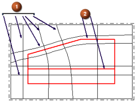

驱动类型
驱动类型用于将点从驱动到目标面投影(沿矢量方向)。然后，系统会使用这些点来创建一个近似 B 曲面的拼合。
-
网格曲线将使用主曲线和交叉曲线来计算驱动，这些曲线必须满足创建通过曲线网格曲面的所有条件。
在拼合选定的目标曲面之前，系统由曲线网格在内部构造 B 曲面驱动。
使用网格曲线时，所选的曲线应当与目标曲面中的主特征线大致平行。这样比较容易获得一个包含少量补片的封闭公差，但是，需要小心不要让驱动曲线太歪曲。

-
 —选定曲线
—选定曲线 -
 —特征线
—特征线
-
-
B 曲面将使用所选的 B 曲面作为驱动曲面。
-
自整修在您想使用低阶曲面来逼近高阶曲面时，是非常有用的。